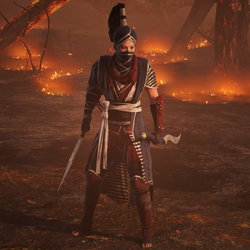

Джун - майстер, допомагає гравцеві вистежити членів Безсмертного Синдикату.Зони, де можна знайти Джун, будуть містити діяльність Безсмертного Синдикату. У зоні буде до трьох різних місць дії синдикату. Джун допоможе вам у бою під час зустрічі з Синдикатом. Існує чотири можливих завдання залежно від того, з яким підрозділом ви стикаєтеся.
- Зміцнення: Синдикат форт можна знайти. Знищити ворота і вбити члена Синдикату, який захищає їх. Форт містить невразливих часових, цілющі тотеми, які забезпечують дуже велику регенерацію життя члену Синдикату, і безперервно породжує ворогів.
- Транспорт: Синдикат буде перевозити вантаж в інше місце. Вони почнуть рухатися, як тільки ви наблизитеся до них. Місія провалится, якщо вантаж добирається до місця призначення.
- Дослідження: Підземна синдикату. Після входження внеї необхідно вбити учасника синдикату, перш ніж буде знищено зазначену кількість доказів.
- Втручання: Синдикат влаштує засідку в невідомому місці. Місія зазнає невдачі, якщо ви вбиті або якщо ви втічете дуже далеко від точки засітки.